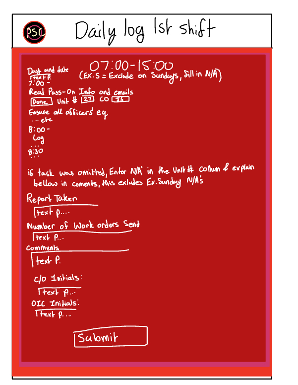
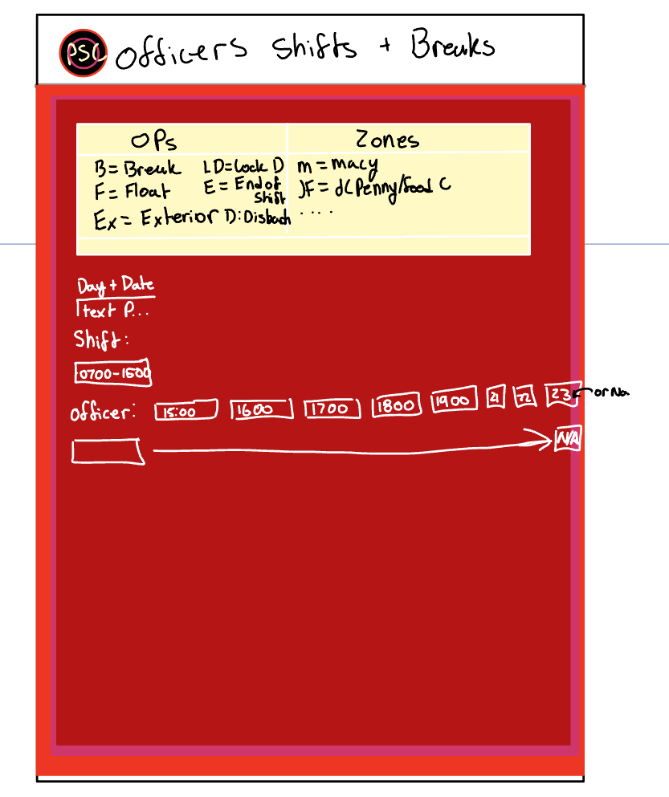
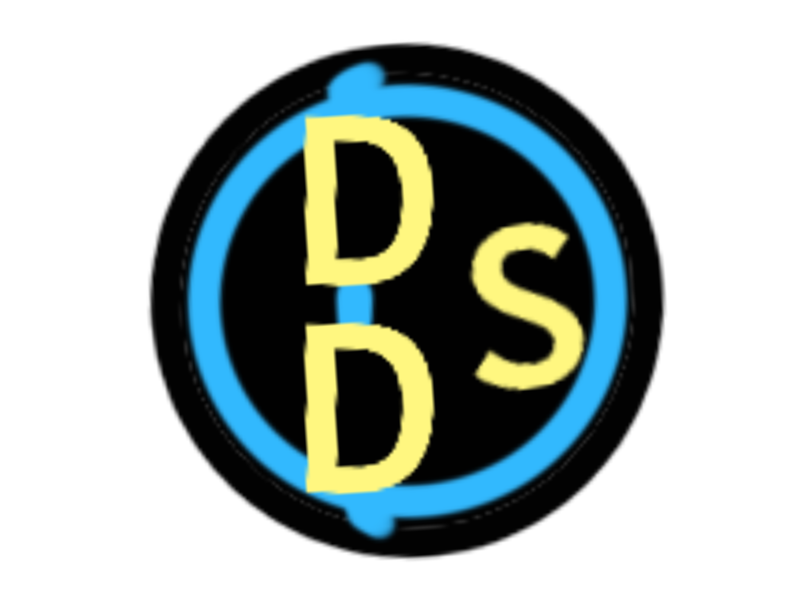
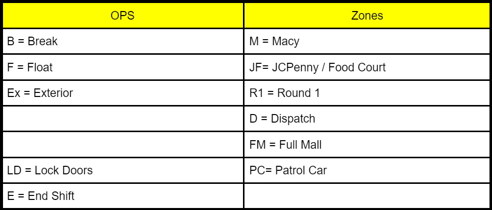

Application Overview:
About:
- This websight is for both my current job and further expantion for conpiling mall security, or other, saily duties into a webpage to make it easier to track and fill out. This allow the remoel of paper, unless aemeergancy like no power. On the home page you will see locations and you would click on yours leading to a login page. Once you log in itll lead to a page with diffrent shifts that link to those shifts duties. After filling out one of the duties you would save your work and itll compine it into a Excle spread sheet where you can do your wish with.
Technology Overview:
List of programming languages:
- Html, Css, Javascript
List of libraries, platforms, and information:
- Firebase
Feature List:
- Home page that links to Login, then Shifts, then seprate duties within that shift
- Have a Daily dtuties, Key Audit, Officer Checklist, Officer placement and breaks form in every INDEVIDUAL shift
- Have a 1st Shift, 2nd Shift, 3rd shift, and All Shifts page that links to duties in that page
- Have a home page that links to difrent locations
- Have it so that the form turns into an excle spreadsheet
Future Feature List:
- Back button on logo
- Have a Daily Door log in All shifts tab
- Have officer personal information in All shifts tab that is easily changeable
- Log in page - links to another page if info is right and allows for saved progress threwout the websight
Basic Technical Features:
- Buttons link to next page
- Forms are able to be filded out
- Text links to another page
- Have a fill in prompt, dropdown prompt, and table be in a form
Advanced Technical Features:
- Log in and Log out
- Multiples Pages
- Saving user data
- Form transfers into excle spreadsheet
Consept images, Art, Logos, Images used:

Daily Log page/form Consept

Officer Possitions and Breaks page/form Consept

DSDLogo
DSDHomePage

Leter short cuts for Officer Possitions and Breaks Consept
 PSCFoxValley Login, Shifts, and Tasks/Duties backdrop
PSCFoxValley Login, Shifts, and Tasks/Duties backdrop
 Form Backdrop (For all forms)
Form Backdrop (For all forms)
Last Updated 05/05/2024